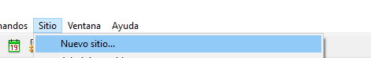

Pica aqui pa' regresar conmigo :'v
Configuracion del sitio
1.- Ir al sitio:

2.- Click en "Nuevo sitio":

3.- Nombre del sitio: Equipo X:

Carpeta del sitio local: Una carpeta donde se va a guardar los archivos html y creacion de la carpeta "Imagenes". Ejemplo C:/Users/Documents/Cbtis54/CNAD/2012equipo
- Dar clic
-Ir a Sitio
Clic "Administrar sitio"
Seleccionar "Equipo X"
Dar boton en forma lapiz Editar el sitio seleccionador actualmente
Dar clic "Servidores"
-Dar clic
* Nombre de servidor Servidor X
* Direccion FTP ftp webcastlaredo com
* Puerto 21
* Nombre del equipo eX@Webcastlaredo.com
* Pasaword 12345 (se activa casilla Guardar)
* Dar clic Prueba y esperar que diga Dreamwear se ha conectado con el servidor Web correctamente dar Aceptar
* Dar clic "Guardar"
* Sale un mensaje "El cache volvera a crearse porque el nombre.................. y darle ok
* Se ve que esta activa ala casilla unicamente activa para Remoto